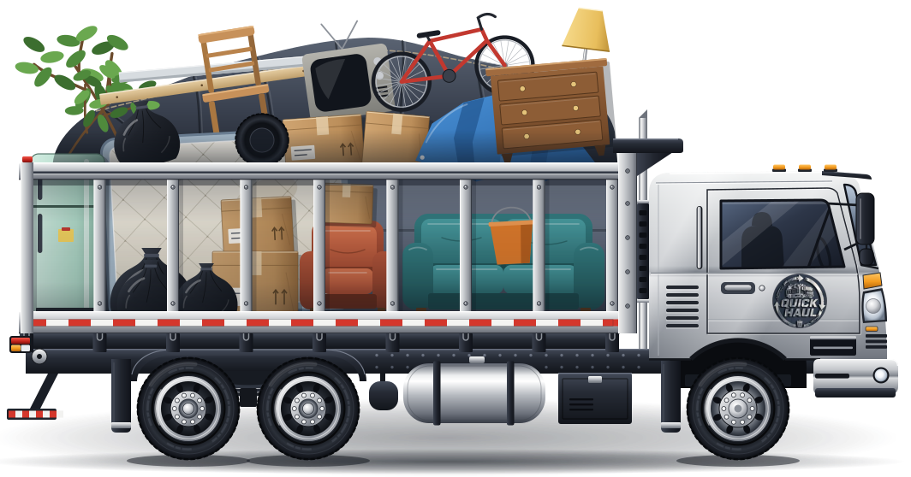
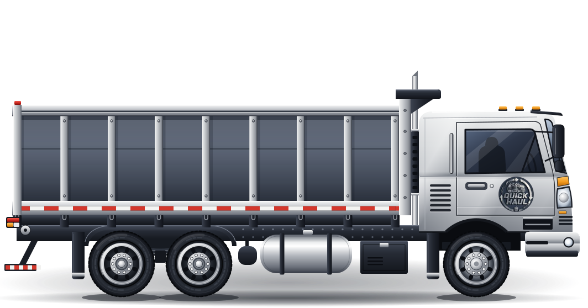
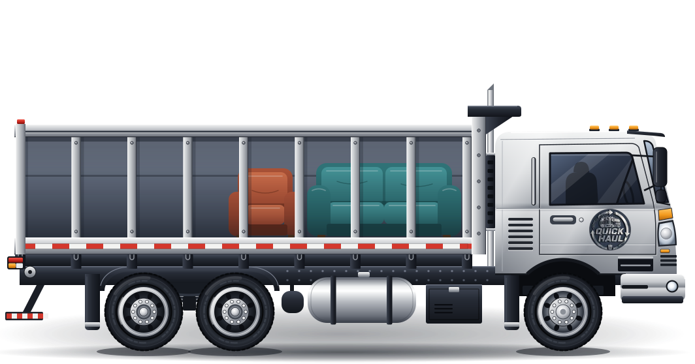
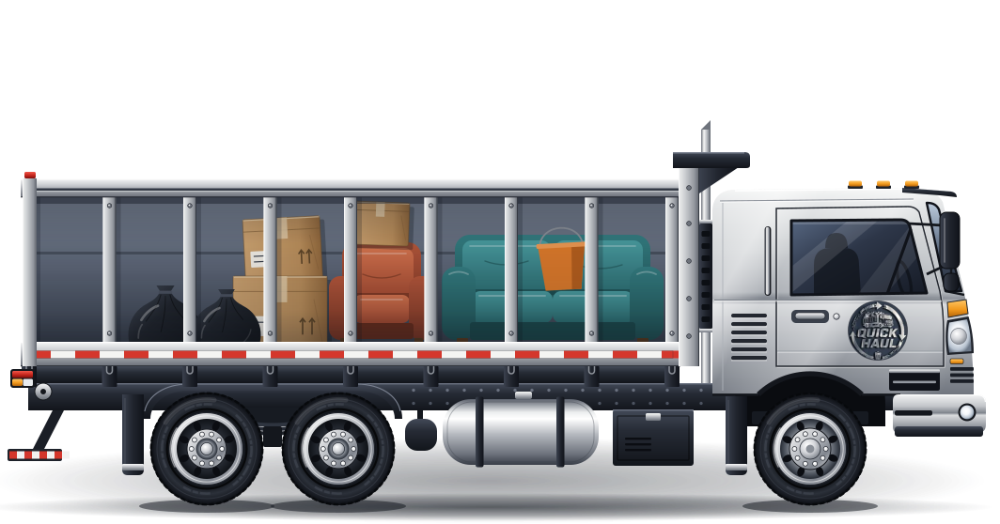
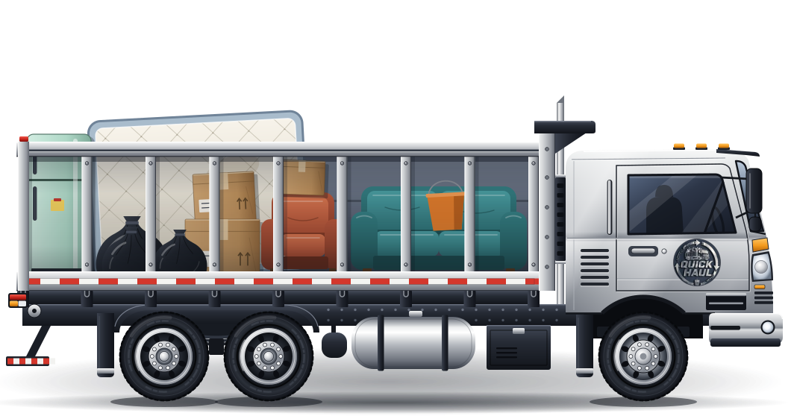
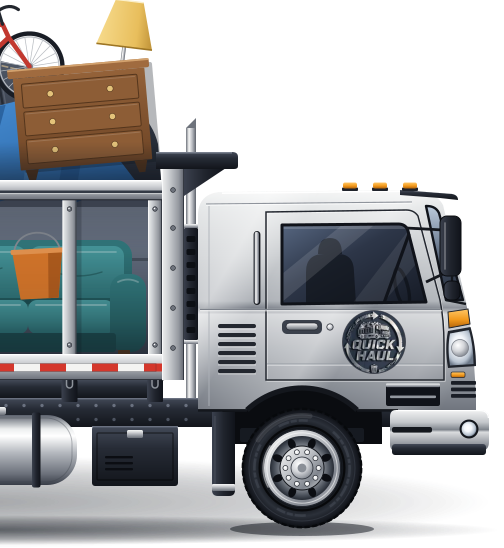
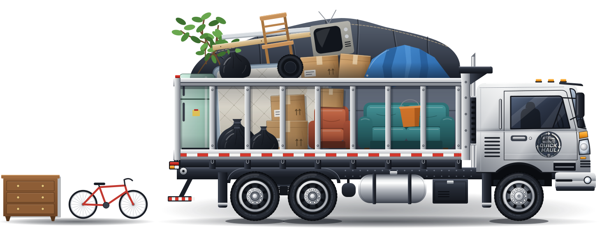
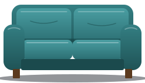
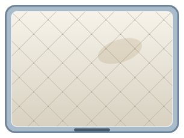
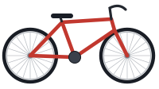

Truck set
The truck in Quick Haul's logo, redrawn to scale: a cab-forward truck with a slatted body, a tandem rear axle and a heap of junk. Metal like the logo; the load is the only colour. One drawing, every use.
Before and after, same size

The gauge: same truck, five loads. Replaces the fill bar on Home, Services pricing, Book and the town pages. Empty goes on the 404.




Banner art: the truck parked on a band's edge, over a colour photo
Banner art for narrow screens and tall banners: truck-nose.svg. Section art for Donate: truck-donate.svg, the good stuff set apart at the curb.


Section art: the load's items on their own, in the same hand. Replaces the FAQ and Contact line art where art is still wanted.


